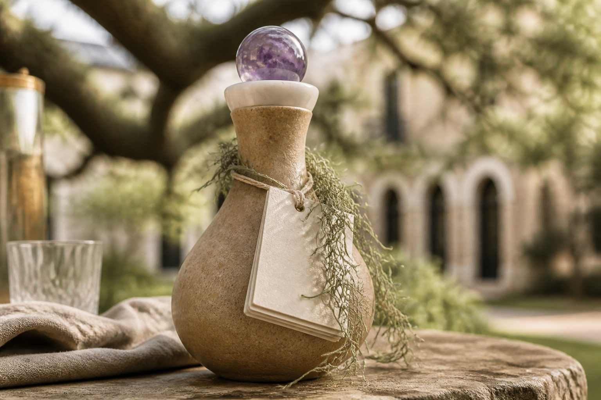
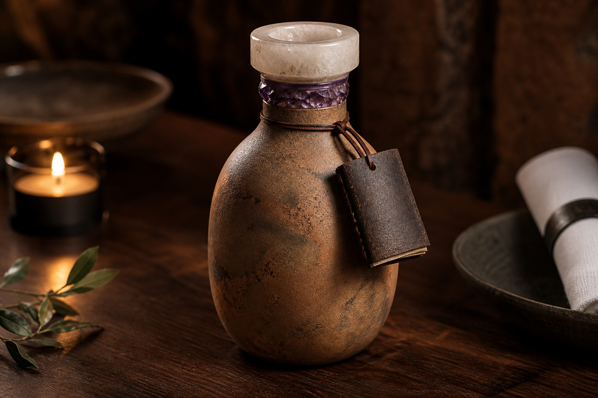
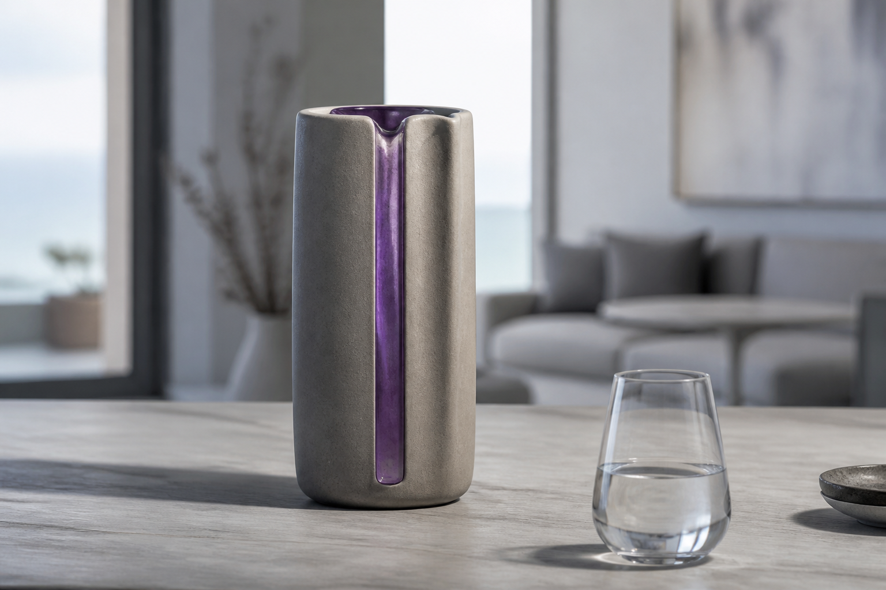

AquaQuartz
Intentional place-water · forever vessel · city pride
Complete brochure: what it is, how a city shows off its water, Lithia and Savannah, whether you need a full treatment train or just a good filter — with real cost ranges — order of operations, money, and how the founder stays protected.

Savannah Place Edition concept — Spanish moss at the neck, little book, quartz-look liner.
1. The whole scope (one page)
The ritual
Tableside water from a named place, poured from a forever stone-and-glass decanter with a neck book. Guest takes the vessel home. No single-use plastic.
The water
Honest place water — not “structured.” Lithia Springs first (heritage mineral). Cities later (Savannah, Nordic, 50 Place Editions). Optional House Sip for contest-level taste.
The object
Earthen body · quartz-look liner · purple/local glass · neck book → website (film, poem/blessing, give-back). Art you keep.
The company
Prime Field Technologies, LLC (or AquaQuartz subsidiary). Trademark, designs, contracts owned by the company. Founder: Jonathan Simons.
We sell art + ritual + place pride + stewardship. Blind sip contests are optional for some editions — not Lithia’s job.
2. Show off your city
Every Place Edition is civic pride in a glass: this is our water, our vessel, our poem, our give-back. The guest leaves with a forever object that still says the city’s name on the shelf.
| Edition | Water story | Vessel cue | Job |
|---|---|---|---|
| Lithia Springs (launch) | Historic mineral spring through quartz-bearing granite | Warm river-clay · amethyst glass | Heritage character |
| Savannah / Lowcountry | Floridan Aquifer + Abercorn Creek — civic pride; past statewide taste win | Ochre / tabby · moss glass · Spanish moss at neck | Hometown soft sip |
| 50 Place Editions | Local spring or city’s best water under contract | Local color on same kit language | License / pride later |
City pitch: “Your water, held in art, taken home — money back to your watershed.” Restaurants and tourism boards understand that sentence.
3. Do we even need to process?
Often, no — not the full train. If the city’s source is already decent (Savannah usually is), a good catalytic carbon filter + cold serve removes the crap that makes water taste like pipes: chlorine, chloramine, mild sulfur. That is enough to show off the city honestly.
Default for city / Savannah pilots: catalytic carbon (+ sediment) → chill → quartz vessel.
Only add RO + remineralize if you want a separate “House Sip” SKU engineered to match contest winners — or if local water still loses a blind test after carbon.
Never RO Lithia and still call it Lithia Spring Water.
Two paths
| Path | When | Promise |
|---|---|---|
| A. Filter the place | City pride editions (Savannah first) | “Our water, cleaned of pipe taste” — still that city’s water |
| B. House Sip train | Chef wants Evian-class preference wins | “Crafted for taste” — label as purified + minerals |
| C. True spring | Lithia (and licensed springs) | Leave chemistry alone; serve cold; honest mineral character |
4. The tech — what each stage costs
Ballpark retail / restaurant-supply pricing (USD, 2026). Install and local codes extra. Cartridges are ongoing.
→ sediment prefilter
→ catalytic carbon (chlorine / chloramine / mild sulfur taste)
→ optional: reverse osmosis (flat blank)
→ optional: remineralize (Ca / Mg / HCO₃)
→ chill 4–10 °C
→ inert quartz vessel
| Stage | What it does | Gear (approx.) | Ongoing |
|---|---|---|---|
| Sediment | Protects carbon / RO | $20–80 cartridge · often in combo head | Replace per schedule |
| Catalytic carbon | Removes chlorine, chloramine, mild H₂S taste/odor | $350–500 commercial dual head (e.g. Everpure QT-class carbon + catalytic); residential catalytic setups ~$150–400 | ~$80–200 / change · often 6–12 mo or by gallon rating (~20k gal on some heads) |
| Reverse osmosis | Wipes slate clean → flat water | ~$400–1,500 under-counter; commercial beverage RO ~$2k–7k+ | Membranes / prefilters yearly-ish |
| Remineralize | Puts back Ca / Mg / bicarbonate → TDS ~200–350, pH ~7.2–7.8, low Na | ~$50–200 cartridge / mineral kit on RO product | Cartridges / mineral packs |
| Chill | 4–10 °C — always for preference | Restaurant cooler / ice bath / undercounter chiller $0–$1.5k | Power / ice |
| Quartz vessel | Holds it. No chemistry. Art + brand. | See unit COGS ~$70–150 goal | Guest keeps it |
| UV (optional) | Extra microbe kill only — not a taste filter | ~$100–400 | Lamp yearly |
What to buy for a pilot
| Pilot kit | Ballpark installed | Enough? |
|---|---|---|
| City pride (recommended first) — sediment + catalytic carbon + chill | ~$400–900 gear · +$150–500 install | Usually yes for Savannah / good municipal water |
| House Sip — above + RO + remineralize + chill | ~$1.5k–6k depending on commercial vs under-counter | When you want to chase “best in the world” blinds |
| Lithia spring — source contract + cold serve (no RO) | Water deal + testing; filter only if partner/polish needs it | Yes for heritage SKU |
Catalytic carbon alone is the high-leverage spend. Commercial dual carbon + catalytic heads commonly land around $350–500 before install. That is the piece that makes city water stop smelling like the pool.
Target chemistry (only if you run House Sip)
| Lever | Target |
|---|---|
| TDS | 150–400 mg/L (sweet spot ~200–350) |
| pH | ~7.2–7.8 |
| Calcium | ~40–100 mg/L |
| Magnesium | ~10–30 mg/L |
| Bicarbonate | ~100–300 mg/L |
| Sodium | as low as practical |
| Chlorine odor | none |
| Serve | cold |
Quartz lining / moss / purple glass do not change this chemistry. UV does not remove chlorine or sulfur taste. Carbon does.
5. The vessel & brand kit

Lithia
Heritage mineral · Cherokee-country craft cues · amethyst glass.
Savannah
Tabby / ochre · Spanish moss at neck · hometown pride.

Nordic / Place
Same kit language · local color · local water · local poem.
- Inert food-safe quartz-look liner (true quartz accent on heroes).
- Neck book → site: source film, blessing or poem, give-back %.
- No medical / structured-water claims. No fake tribal endorsements.
6. Order of operations
- Protect — LLC owns IP; trademark AquaQuartz; NDAs (~$1–4k).
- Lithia deal — water + story rights in writing.
- Samples — 10–20 vessels (Lithia look) + neck book + simple site (~$10–25k phase).
- One restaurant — Savannah or Atlanta/Charleston; catalytic carbon on local water or Lithia cold pour.
- Learn price / COGS — then 100–200 unit run + insurance.
- Savannah edition — moss-neck samples; city pride story.
- Optional House Sip — add RO + remin only if blinds demand it.
- Place Editions — after Lithia (and ideally Savannah) work.
7. Cost to start · what you can make · the ask
| Path | Capital |
|---|---|
| Lean to first pilots | ~$20–40k |
| Full pilot + inventory | ~$40–120k |
| Investor ask | $100–200k |
Example night: guest ~$280 (keeps decanter) → restaurant ~45% → brand ~$154 → kit COGS goal ~$110. Year one is usually proof (often a loss). Upside: refills, Place licenses, volume.
We’re raising $100,000–$200,000 for AquaQuartz under Prime Field Technologies, LLC (or a subsidiary).
Use: trademark & contracts · Lithia rights · sample & first-run decanters · catalytic carbon pilots · neck books & site · insurance · 2–3 restaurant pilots (Georgia / nearby).
Start: Lithia first · Savannah hometown next · Place Editions later.
Investor gets: equity in the company that owns the mark, designs, and contracts.
Founder keeps: creative control and enough ownership that the brand still needs Jon.
8. Protect the founder
Idea alone isn’t property. Trademark AquaQuartz, assign designs to the LLC, sign Lithia / makers / restaurants to the company, keep founder control. Then “great idea — we don’t need Jon” is legally false unless they buy the company.
9. One-line freeze
AquaQuartz = named place water + forever quartz vessel + neck book + city pride + give-back. City editions: catalytic carbon + cold is usually enough. Contest sip: add RO + remineralize as a labeled House Sip. Lithia: leave the spring alone. The vessel is art — not a chemistry lab.